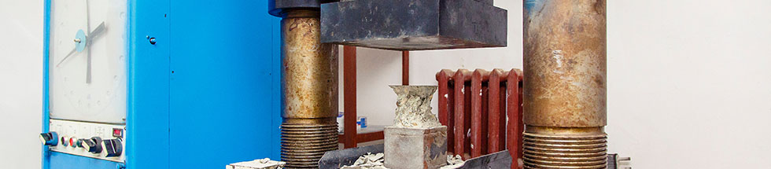

Лабораторные испытания
>Строительная лаборатория
Целью нашей лаборатории является оказание качественных услуг на проведение лабораторных испытаний, контроль строительных материалов и конструкций, техническое обследование зданий и сооружений, лабораторное сопровождение строительства (организация лабораторного поста).
Мы осуществляем УЗИ-дефектоскопию и контроль сварных соединений, выполняем натурные испытания строительных конструкций. Все виды работ выполняются в строгом соответствии с действующими стандартами и нормативными документами РФ (ГОСТ, СНиП, СП).
Лаборатория оснащена современным оборудованием, позволяющим определять различные физико-механические свойства материалов. Мы проводим контроль качества строительства, испытания следующих строительных материалов:
- Бетон
- Строительный раствор
- Кирпич силикатный и керамический, камень
- Основания и грунты
- Щебень и гравий
- Плитка керамическая
- Асфальтное покрытие
- Металлы
- Насыпные грунты
Также предоставляем заказчикам услуги электроизмерительной лаборатории и испытание пожарных лестниц и ограждений кровли крыш.
Электроизмерительная лаборатория
Наша электроизмерительная лаборатория проводит испытания социальных, промышленных и жилых объектов. Проведенные испытания показывают реальное состояние электроустановки, что позволяет службе эксплуатации своевременно выявить проблемные места. Технические отчеты испытаний выполнены и оформлены в соответствии с ПУЭ, ПТЭЭП, требованиями Ростехнадзора и МЧС.
Виды испытаний и измерений электроизмерительной лаборатории:
- проверка состояния элементов заземления электроустановок
- проверка наличия цепи и замеры сопротивлений между заземлителями и заземляемыми проводниками, заземляемым
- оборудованием (элементами) и заземляющими проводниками
- измерение удельного сопротивления земли
- измерение сопротивления заземляющих устройств всех типов. При этом замер изоляции устанавливает соответствие полученных результатов с требованиям ПУЭ
- измерение сопротивления петли «фаза-ноль» в установках напряжением до 1 кВ с глухо заземленной нейтралью
- измерение сопротивления изоляции кабелей, обмоток электродвигателей, аппаратов, вторичных цепей и электропроводок, электрооборудования напряжением до 1 кВ
- проверка срабатывания защиты при системе питания с заземленной изолированной нейтралью
- проверка и испытание установочных автоматов питающих линий и УЗО
- проверка срабатывания защиты, выполненной плавкими вставками в электроустановках до 1 кВ, калибровка плавких вставок
- проверка автоматических выключателей в электрических сетях напряжением до 1 кВ на срабатывание по току
- измерение переходных контактов и сопротивлений обмоток электрических машин и трансформаторов
- измерение сопротивления постоянному току обмоток силовых трансформаторов и масляных выключателей
- испытание повышенным напряжением кабельных линий и электрооборудования напряжением до 1 кВ. Испытание и измерение характеристик трансформаторов напряжений и трансформаторов тока напряжением до 1 кВ
- проверка устройств релейной защиты, автоматики и телемеханики
- проверка схем аварийного освещения
- измерение сопротивления растеканию тока заземляющего устройства
- проверка схем молниезащиты
- проверка и испытания блоков питания